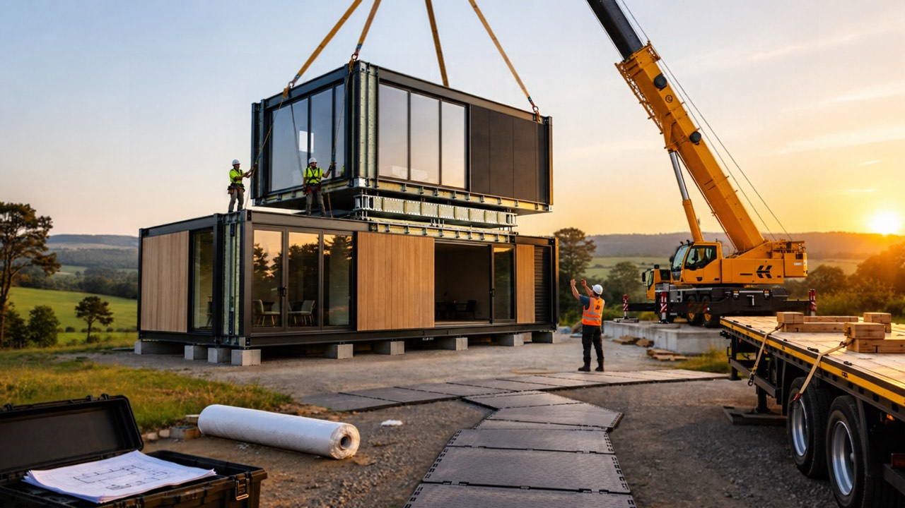

Vivienda industrializada
Casas industrializadas: qué son, qué ventajas tienen y cómo acertar

Las casas industrializadas están de moda. Se habla de viviendas que se fabrican en meses, de presupuestos cerrados y de obras limpias. Detrás de esa promesa hay una forma de construir seria y con mucho recorrido, pero también mucha confusión. Ni toda casa industrializada es una "casa prefabricada de catálogo", ni basta con elegir un fabricante para tener una buena casa. Explicamos qué es, qué se puede esperar de verdad y dónde está la clave para acertar.
Qué es una casa industrializada
Una casa industrializada es la que se fabrica en gran parte en un taller o una fábrica, con procesos controlados, y después se monta en la parcela. La obra in situ se reduce a la cimentación, las acometidas y el ensamblaje. No es un tipo de casa, sino un sistema constructivo: el resultado puede ser tan arquitectónico, personal y duradero como una casa tradicional.
Los sistemas más habituales son:
- Modular tridimensional: la casa se fabrica en módulos completos, con instalaciones y acabados, que se transportan y se colocan con grúa. Es el sistema más rápido en obra, pero el tamaño de los módulos está condicionado por el transporte.
- Entramado ligero de madera o acero: paneles de muros, forjados y cubierta fabricados en taller y montados en la parcela. Da mucha libertad de diseño.
- Madera contralaminada (CLT): grandes paneles macizos de madera que forman la estructura. Muy buen comportamiento térmico y una huella de carbono menor.
- Hormigón prefabricado: elementos de hormigón fabricados en planta. Muy robusto y habitual en promociones.
Por qué se habla tanto de ellas
En España la construcción industrializada todavía representa una parte pequeña del total, muy por debajo de países como Alemania o Reino Unido. Pero el sector está creciendo: falta mano de obra cualificada, los costes de la obra tradicional han subido y las administraciones la están impulsando con programas específicos de ayudas para la vivienda industrializada.
Ventajas reales
- Plazos más cortos y previsibles: mientras se tramita la licencia y se prepara la parcela, la casa se fabrica en taller. La lluvia no para la fábrica.
- Mayor control de calidad: se trabaja en condiciones controladas, con tolerancias de milímetros, lo que favorece un buen aislamiento y una buena hermeticidad.
- Coste más cerrado desde el principio: buena parte del precio queda definido al encargar la fabricación, con menos sorpresas durante la obra.
- Eficiencia energética: es un sistema muy adecuado para viviendas de consumo casi nulo y estándar Passivhaus.
- Obra más limpia: menos residuos, menos ruido y menos tiempo con la parcela ocupada.
Lo que conviene saber antes de lanzarse
- No es necesariamente más barata. El ahorro depende del sistema, los acabados, el transporte y la obra en la parcela. Los precios "desde" de los catálogos rara vez incluyen cimentación, acometidas, licencia, honorarios ni urbanización.
- Necesita licencia como cualquier casa. Si es una vivienda permanente, debe cumplir el planeamiento urbanístico y el Código Técnico de la Edificación, y requiere proyecto firmado por arquitecto. Cada ayuntamiento tiene sus criterios, y conviene consultarlos antes de comprometerse con un fabricante.
- El diseño se decide antes. En una casa industrializada los cambios a mitad de camino son caros o imposibles: todo debe estar definido antes de fabricar.
- El terreno manda. La pendiente, el acceso de camiones y grúas, la orientación y las vistas condicionan qué sistema encaja mejor.
- Financiación. Algunas entidades tratan de forma distinta la hipoteca de autopromoción cuando buena parte de la casa se paga en fábrica. Merece la pena preguntarlo al inicio.
Por qué el arquitecto es la pieza clave
Lo industrializado es la forma de fabricar, no la forma de proyectar. Una casa industrializada bien resuelta empieza igual que cualquier buena casa: con un proyecto pensado para su parcela, su clima y las personas que la van a vivir. La diferencia es que ese proyecto tiene que estar mucho más cerrado y coordinado desde el principio.
En el estudio, Eva Sebastián Gil está especializada en el diseño y la gestión de viviendas industrializadas. Su trabajo en este tipo de proyectos incluye:
- Estudiar la parcela y la normativa para saber qué se puede construir y qué sistema encaja mejor.
- Elegir el sistema y el fabricante con criterio independiente, comparando propuestas que cubran lo mismo.
- Proyectar la casa a medida, aprovechando las ventajas del sistema sin renunciar a una arquitectura propia.
- Coordinar fábrica y obra: cimentación, acometidas, transporte y montaje, para que todo encaje a la primera.
- Tramitar la licencia y dirigir la obra hasta la entrega de llaves y la licencia de primera ocupación.
Así, el propietario tiene un único interlocutor que defiende sus intereses frente al fabricante y la constructora, y una casa que no parece "de catálogo", sino pensada para su lugar.
Por dónde empezar
Si te atrae la idea de una casa industrializada, el primer paso no es elegir un modelo, sino analizar tu parcela y lo que necesitas. Con eso se puede valorar qué sistema tiene sentido y hacer una estimación realista de plazos y costes.
Cuéntanos tu proyecto y estudiamos juntos si una casa industrializada es la mejor opción para ti.